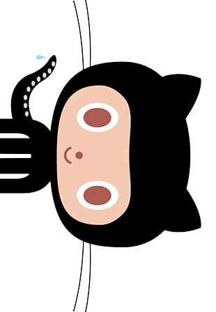
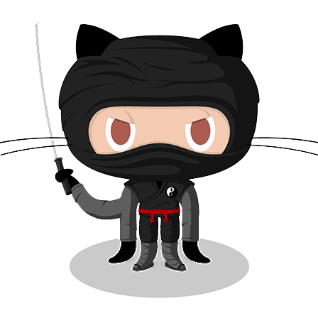
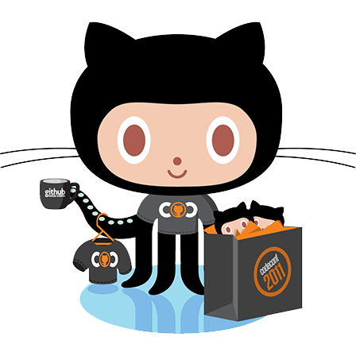
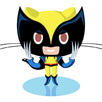
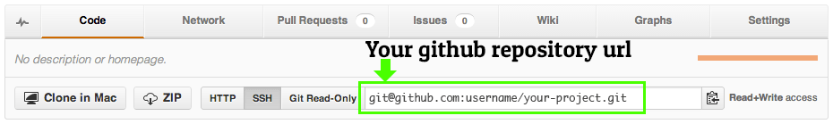

◀
▶
Open Source Your Code For Fame and Fortune
A TweenDeck Presentation by John Polacek
--> Get the code on Github <--
Press → to go forward, and ← to go back
Or scroll down ▾
If you don’t already have
a Github account,
get one.
And start posting stuff.
Why?

Sharpen Your Skills
The world is watching

Gain Confidence
“Do I have the coding chops?”

Good Job → Great Job → Best Job
Opportunities
Good Job → Great Job → Best Job
(and get to go to conferences)
But mainly…
Will people say I suck?
Yes.
Learning in the Open
Can be intimidating, but…
Makes you write better code
Makes you learn faster
Take me for example…
Started as an illustrator
(no coding experience)
Then a Flash dev
(then Flash refugee)
And then I started
doing open source
Scrollorama
My 1st big hit
(also one of my first plugins)
Responsivator, stacktable.js
& BigVideo.js
(Spawned from my work projects)
etc.
SuperScrollorama, Scrolldeck, Tweendeck, What The Heck Is Responsive Web Design?, ControlDeck.js, Extra Strength Responsive Grids, Match The Letter, Passwords for the Manly Man, Channel of Awesome…
I don’t consider myself
Hot Snot
But I am also not
Cold Booger
I am just like you guys, and...
The secrets to open source coding success
Learn in public
Have a thick skin
Keep it fun
From Github Zero To Hero


Starting From Zero
Find a project to contribute to
(can be intimidating/disappointing)
Start your own project
(My reco)
Keep It Simple
Break big ideas into chunks
Pluginize!
Break off pieces of code from other projects
Thou Shalt SHIP!
Don’t try to be perfect. You will never be perfect.
Don’t overthink it. SHIP!
An Example
How about this very presentation right here? Open sourced live during Techweek Chicago.
How To Publish Your Github Project
First, make your awesome project.
Then, from inside your project directory:
git init
Initialized empty Git repository in /open-source-for-fame-and-fortune
git add .
git commit -m 'initial commit'
[master (root-commit) 3df470a] initial commit [master (root-commit) 492b680] initial commit 57 files changed, 7481 insertions(+) create mode 100644 .gitignore create mode 100644 README.md
Now, go to Github and make a new repository for your project
Once your project has been created, copy the github repository url.
Then push.
git remote add origin 'git@github.com:johnpolacek/open-source-for-fame-and-fortune.git'
git push origin master
Counting objects: 72, done. Delta compression using up to 4 threads. Compressing objects: 100% (66/66), done. Writing objects: 100% (72/72), 2.36 MiB, done. Total 72 (delta 7), reused 0 (delta 0) To git@github.com:johnpolacek/open-source-for-fame-and-fortune.git * [new branch] master -> master
Last, make a project page using Github pages
git checkout -b gh-pages
Switched to a new branch 'gh-pages'
git push origin gh-pages
Counting objects: 72, done...
Keep your project page and master branch in sync as you commit changes. The easy way:
git add .
git commit -m 'some awesome changes'
git push origin master
git checkout gh-pages
git rebase master
git push origin gh-pages